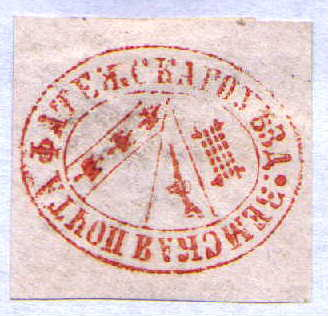
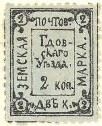

Return To Catalogue - Go to Zemstvos overview - Russia
Note: on my website many of the
pictures can not be seen! They are of course present in the
catalogue;
contact me if you want to purchase it.

Fatezh only issued postal stationary and no stamps. I have seen the same envelope in the colour blue (instead of red).
1884 Arms
3 k green and red ('MAPKA' on top, rare)
3 k green and red
3 k blue and red ((1894)
3 k violet and red (1894)
3 k yellow and red (1894)
3 k red and lilac (1900)
3 k brown (1892)
3 k violet (1892)
3 k red (1892)
3 k blue (1892)
1886 Arms


3 k green and red 6 k blue and red (different type, '6' in four corners)
1887 Arms


3 k red and blue 6 k red and blue
1887 Arms in oval
3 k green 3 k red (same type)
1888 Arms

3 k violet (stars in upper corner) 3 k black (different type, square center)
1888 Arms
?
3 k black and red ('III' on top, '3' to the left, 'K' right)
3 k blue and red (same type)
1888 Arms

2 k blue and red 3 k red and blue
1889 Arms


3 k green and red 3 k red and green 3 k gold
1890 Arms
3 k red and blue ('3' and 'K' in the corners)
3 k blue and red ('3' in lower left corner and 'K' in right corner)
3 k brown
1891 Arms in a circle
3 k lilac and red
1891 Arms
3 k yellow and lilac
1891 Arms
3 k lilac
1902 Arms, new type
3 k green
1913 Text, large sized stamp
(Sorry, no picture available yet)
3 k green
1874 Value

(Reduced size)
2 k blue (7 types) 2 k green
1867 Text

2 k black on lilac 2 k black on blue (2 types)
1896 Text, new type

2 k green 2 k blue (1902)

{kind=link}